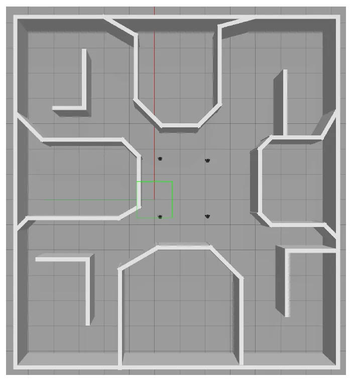
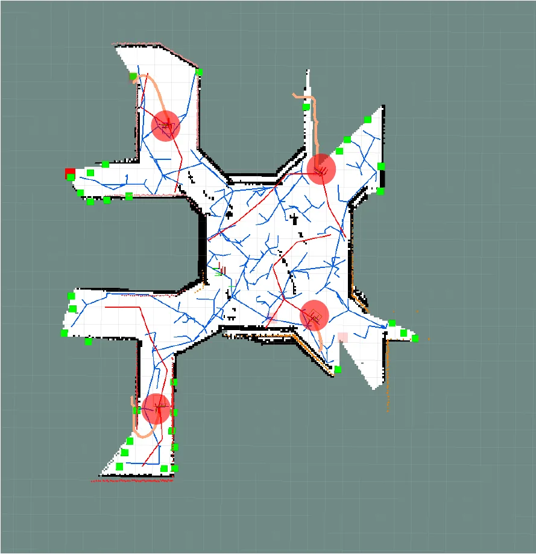

Multi-robot SLAM and reinforcement learning exploration
Part of the MSIT national R&D project AI Bots collaboration platform and self-organizing AI; I'm listed as a participating researcher in the year-2 interim report (Dec 2023). I built a multi-robot exploration environment for four TurtleBot3 robots and trained DQN agents to explore it while SLAM built the map.
| Setup | Measured at | Coverage |
|---|---|---|
| DQN, 1 agent → 4 agents | 5 minutes | ~51% → ~94% |
| Single robot, DQN vs. RRT | 10 minutes | ~78% vs. ~64% |


What I built
- A ROS and Gazebo environment for four TurtleBot3s, with per-robot gmapping, move_base and map_merge under separate namespaces and TF trees.
- Changes to the C++ global and local RRT frontier detectors and the Python filter and assigner nodes that hand out exploration goals.
- A fix that let SLAM run during DQN training: sparse 15-degree LiDAR sampling caused “Scan matching failed” errors, so I expanded observations from 24 to 360 readings and the state from 28 to 364.
- Keras DQN with experience replay, a target network and ε-greedy exploration, reward and goal design, and 3,000 training episodes. Each robot ran an independent agent while their maps merged online.
- RViz views of robot pose, TF, LiDAR, frontiers and paths, two internal talks on ROS, SLAM and RL, and a final presentation on Aug 30, 2023.
Most of the difficulty sat in system setup, topics, TF and map merging, rather than in the learning algorithm. I now design the environment before the algorithm.